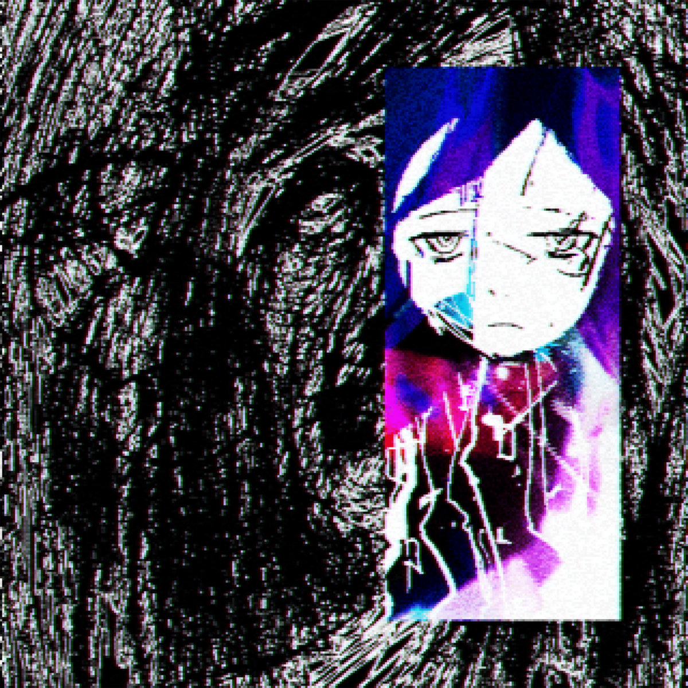
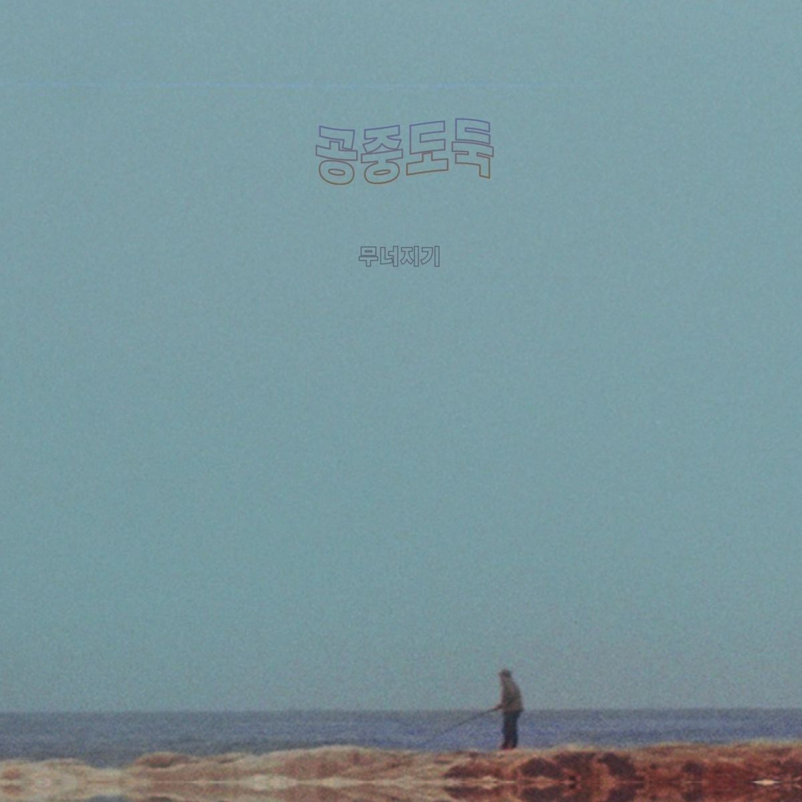
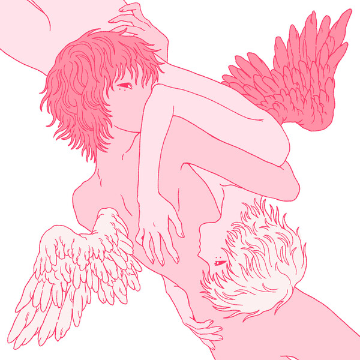
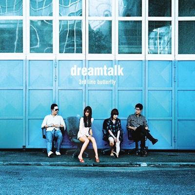
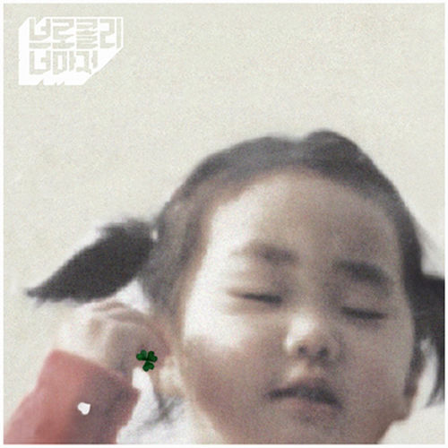

My favorite albums
Miniseries 2
Sumin, Slom

This album was the first(?) R&B album I've listened to and it is GOOD. The vocals definitely take the spotlight on this one. Only criticism I have is that the lyrics are kinda bland, but who cares if the song is banging. The best word I have to describe this album is clean. my favorite song is 진짜 안녕.
We had good times together, don't forget that
Sewerslvt

This album is the definition of
"when you're happy you listen to the music, but when you're sad you listen to the lyrics"
, except there is no lyrics and you're sad always.
So the backstory of this album is that the author lost their lover to suicide and made this album in commemoration.
You can definitely feel the emotions sewerslvt tried to put in each track.
I feel like the earth moves beneath my feet and the time passes too fast for me to do something about it when I listen to this album.
It feels like being lost in a maze you know there is no exit in.
Definitely the album that made me love Drum and Bass genre.
My favorite tracks are probably "dissociating" or "all the joy in life was gone once you left", but I also cried when I first listened to "blissful overdose"
If you wanted to get into Drum and Bass this might be a great start.
Crumbling (무너지기)
Mid-Air Thief (공중도둑)

Good album 👍
Very calm vibes and beautiful melodies.
fav song is "These Chains (쇠사스)". This song sounds so clean and clear, but so full and complicated.
Like this album contains the most beautiful sounds made by humanity, GO LISTEN TO IT.
EVE: ROMANCE
BIBI

I HATE this album.
It just refuses to leave my brain.
I don't even think that it is exceptionally good, but the songs are SOOO catchy, I can't ㅠㅠ.
My favorite songs are "Scott and Zelda" and "Apocalypse".
I hope this doesn't count as K-Pop, otherwise I'm not beating the allegations.
dreamtalk
3rd line butterfly(3호선 버터플라이)

This is a strange one.
I don't think I've listened to this album a lot, but when I do... it makes me feel some type of way.
Like I don't even think I can describe it, but it feels like that one memory from your childhood where nothing even happens, but you remember it crystal clear to this day.
I don't think there is a single album(or even thing!) that makes me feel that way, so I decided to put this album here.
My favorite songs are "Scent(향)", "넌 어느새 난 또다시(idk how to translate this)" and "Smokehotcofferefill(스모우크핫커피리필)"
Cull Ficle
Asian Glow

The things that happen to your ears while you listen to this album can only be described as
"extremely pornographic ultra suck and fuck, the world becomes engulfed in a paroxysm of cumfucked frenzy.
Senior citizens dropping dead from brain frying giga-orgasms"
The first listen was rough, but as I kept listening I actually found it to be very enjoyable even though I still don't understand a single line in this album.
Also this was the first full album I have listened to... imagine what I was thinking.
It feels like being naked at the side of the road while in the middle the night with rain pouring, but for some reasong its... warm?
There is no favorite song, just because every time I even tried to look at what song I'm listening, I realized that I don't even know where I am and who am I and who are these people.
Universal Song(보편적인 노래)
Brocolli, you too? (브로콜리너마저)

This shit is SOOOOOOOOOOOOOOO GOOOOOOOOOD.
Bro like turning on minecraft and listening to this album might be the most healing things ever.
Also, I think I got my pb listening to this album, so it automatically gets bumped up a notch.
ALSO, ultrakill got a new update and I forgot to play it... This doesn't have anything to do with the album, but I just thought I'd mention it.
ALSO ALSO, if you're using a keyboard a lot, you should check your ergonomics, so that your wrists don't get fucked up, like
getting a keyboard shelf under my desk has helped so much with the posture, you don't even understand.
ALSO ALSO ALSO, I've been sad lately, idk why, but probably because I haven't really talked to anyone for a long time.
And like school starts soon, so I think that there will be even less time to talk to people I care about. Maybe I'll find actual
friends in the school.
It's just that I feel that there isn't really anyone that shares my interests and/or gets me.
Anyways, GOATED ALBUM 9.5/10.